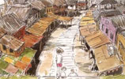
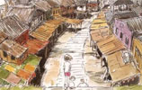

宫崎骏简介
宫崎骏（Miyazaki Hayao，1941年1月5日－），日本著名动画导演、动画师及漫画家，出生于东京都文京区[1]。1963年进入东映动画公司，1985年与高畑勋共同创立吉卜力工作室。2013年9月6日宣布引退。宫崎骏动画作品大多涉及人类与自然之间的关系、和平主义及女权运动，出品的动漫电影以精湛的技术、动人的故事和温暖的风格在世界动漫界独树一帜。
宫崎骏1941年出生于的东京都文京区，在四个兄弟中排名第二，父亲是宫崎家族经营的“宫崎航空兴学”的职员。在第二次世界大战中因战时疏散，举家迁往宇都宫市和鹿沼市。他所在的家族经营一个飞机工厂，属于军工企业，所以战争后期物质匮乏中也能保持颇为温饱的生活，宫崎骏度过了相当自由的幼年生活。然而在这种环境下长大的宫崎骏却意外地对家族的特权产生了怀疑。由于身体不好，故不擅长运动，也因此对静态的绘画很有天分，特别对于飞机感到兴趣，并成为终身的爱好，他后来许多作品当中都反复出现飞行的概念，尤其是在其2014年的作品《起风了》，主人公是一名梦想设计出日本最优秀的飞机的工程师。
高中3年级的时候，他邂逅了第一个恋爱的对象：就是东映动画的日本第一部长篇彩色电影《白蛇传》里面的白娘子。之后宫崎骏进入学习院大学政治经济部。大学里面没有漫画社，所以进入了与之最为接近的儿童文学研究会，传说社员只有宫崎骏一个人。这期间创作了大量的漫画，也曾向贷本漫画出版社投稿，不过似乎是没有完结的作品。当时风起云涌的安保运动中宫崎仅仅是一个旁观者，仅仅在最后时刻作为无党派人士参加了一下。宫崎骏也在思想上开始倾向社会主义，苏联解体对他的思想构成了很大冲击，虽然面对社会主义败北的现实，但是他对劳动者和革命的肯定立场一直没变。宫崎骏在1994年连载完漫画《风之谷》后，决定放弃马克思主义。
宫崎骏于1963年4月进入东映动画公司，从事动画师的工作。由于宫崎骏是次子，有长子继承家业，所以可以按自己喜欢的选择自己的职业。放弃漫画选择动画的原因据本人说是因为被人说自己的作品是在模仿手冢，在自己并不这么认为的情况下。他意识到自己无法超越手冢这样的漫画家，于是选择了即使不是原创也无所谓的动画。
东映动画是由东映电影吸收日动映画株式会社而成立的。在1961年手冢治虫的虫pro成立前，几乎是日本唯一制作动画的企业，有着浓厚的人文气息和悠久的传统。虫pro是以价格低廉的电视动画打开影响的，而当时成本高，画面精细，富于传统的动画电影则还是东映的天下。宫崎进入东映时仅仅是最底层的原画人员。当时战后文艺界一派左派风潮（安保运动刚刚结束），社内充满民主气息，作品的很多东西都靠大家讨论决定。而勤奋、高学历的宫崎因此在讨论中崭露头角。他第一次参与制作的动画是《汪汪忠臣藏》（制作人为白川大作），其不凡的才能被发现后，升职为主要制作人，并担任了东映动画的公会书记长。1964年，社内开始工会活动，领导是大冢康生，副委员长是高田勋，书记长就是宫崎骏。
宫崎骏于东映动画公司认识了在他动画生涯中有着重要影响力的前辈高田勋，在此期间参与了《狼少年肯》（是东映首部动画电视剧）、《太阳王子霍尔斯的大冒险》（高田勋执导）、《穿长靴的猫》（制作人矢吹公郎，1969年公映）等动画的制作，担任原画或场面设计的职务。
社内的老前辈大冢康生发现了东京大学毕业的高田勋等人的才华。1965年，工会的这群人开始一起制作《太阳王子霍尔斯的大冒险》，大冢为作画监督，当时尚为新人的高田勋被他提拔为监督。由于宫崎骏在工作中起了很大作用，大家为他发明了一个职位：场面设计。
富有文艺才华的高田勋给这部作品带来了崭新的概念，里面加入了更多深刻的内涵和丰富的表现，可以说这是日本第一部不仅仅是为儿童制作的长篇彩色动画
。
 《龙猫》
《龙猫》
 《天空之城》
《天空之城》
 《幽灵公主》
《千与千寻》
《幽灵公主》
《千与千寻》